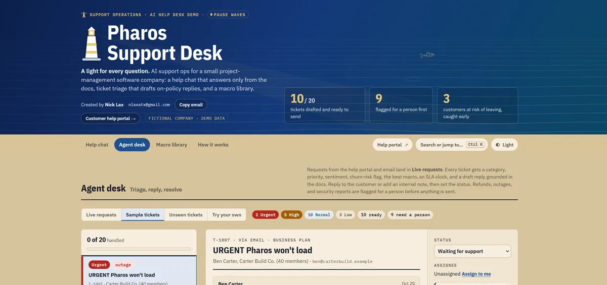
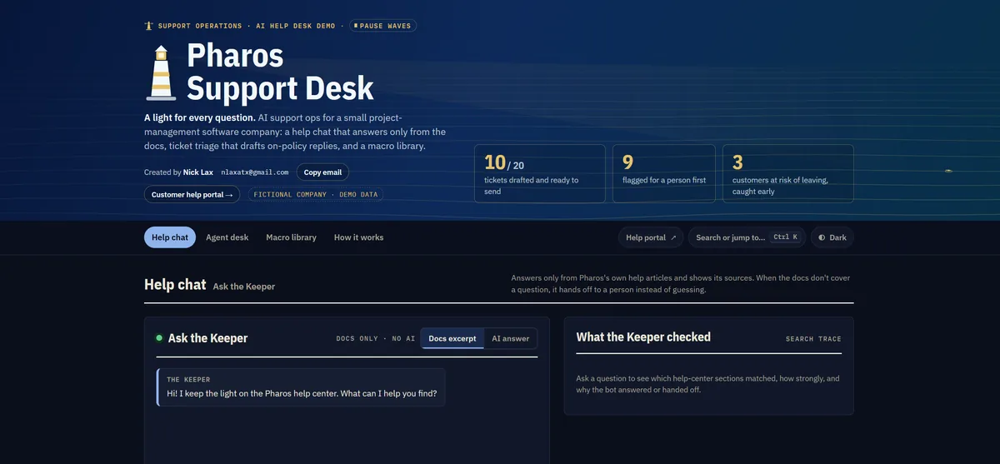

Suspicious-login reports always go to a person, whatever the AI says
AI support operations
Pharos Support Desk
The problem: AI help chats answer confidently even when they're wrong, and nobody can see why a ticket landed where it did.
What I built: A support setup for a fictional project-management app, from both sides. Customers get a help chat that answers only from the help articles and cites them, plus a portal to track their requests. Agents get a desk with AI triage, drafted replies and SLA timers.
The result: On 36 tickets the AI had never seen, triage picked the right category 89% of the time and the right priority 83%. The misses are in the README too.
- category accuracy
- 89%
- priority accuracy
- 83%
- unseen, hand-labeled tickets
- 36